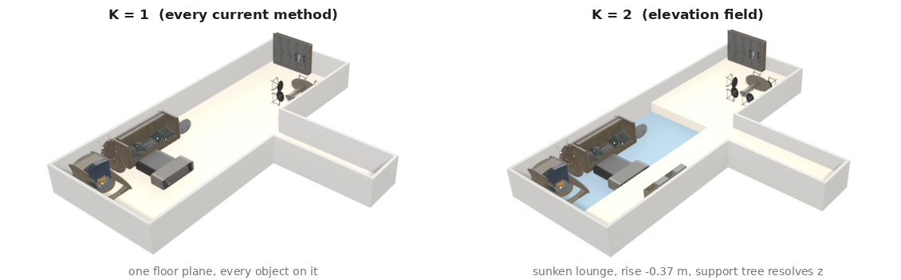
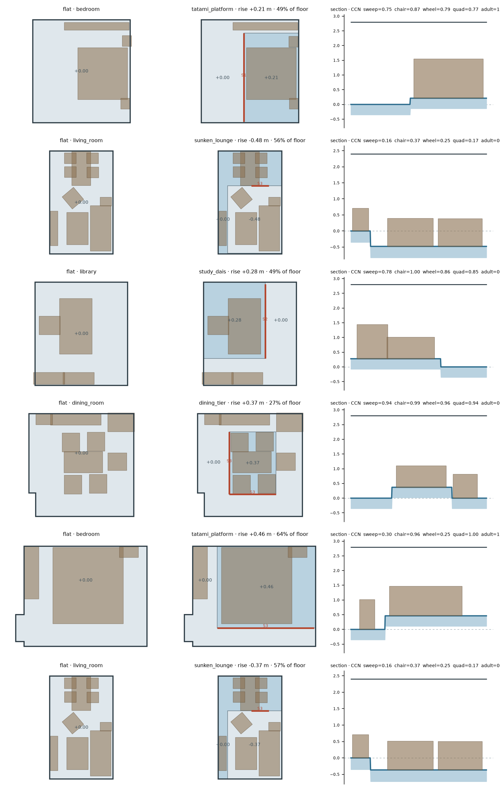
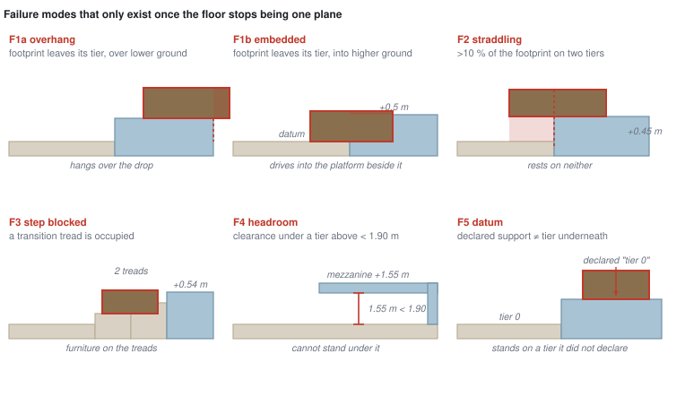
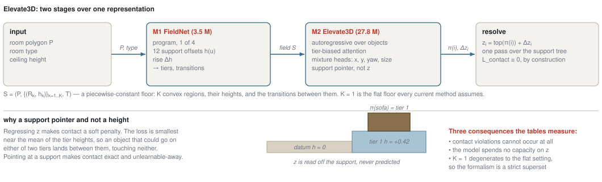
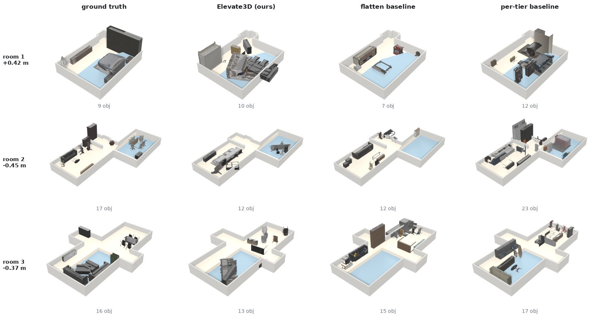
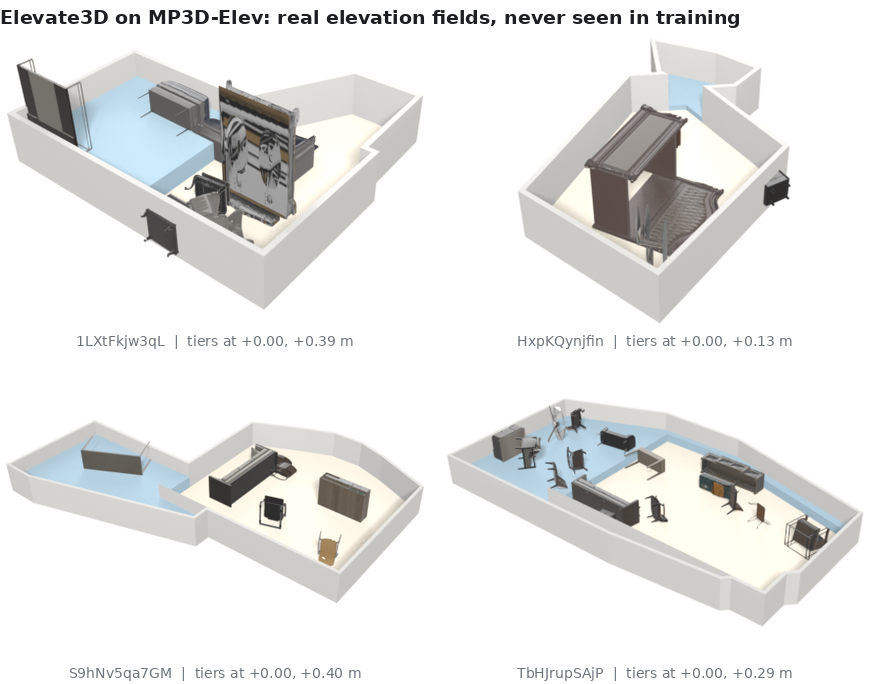
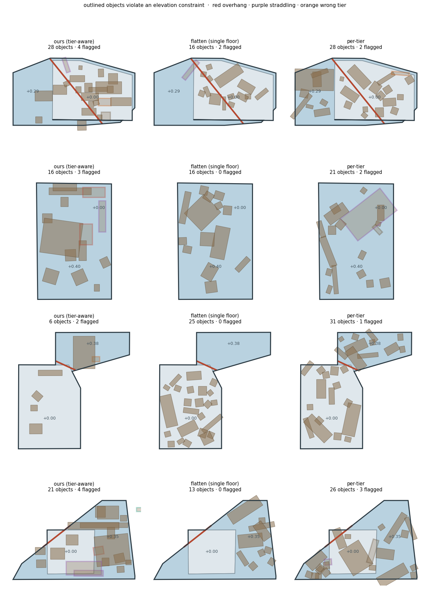

Working draft · 2026-08-30 · not submitted
Method & results log Code project5 (ReRoom-E2E) project4 (ReRoom)
elevation F1 that a method cannot win by declining to use the
elevation. A two-stage generator (3.5 M field model + 27.8 M layout transformer)
runs the task end to end.

Every learned indoor layout method we are aware of represents a room as a polygon in the plane and an object as \((x, y, \theta)\) on it [ATISS][DiffuScene][PhyScene]. Recent work has added rich support hierarchies above that plane — objects on tables, on shelves, on wall-mounted units [HSM][Architect] — and physical guidance for contact and collision [SPREAD]. The plane itself has stayed flat.
Real homes are not. Sunken lounges, tatami platforms, split levels and mezzanines make the floor a height field rather than a constant, and that is exactly the case no current output space can express.
Before building anything we checked the premise. Accumulating floor-mesh triangle area against height for every room in all 6,813 3D-FRONT houses:
| 3D-FRONT | value |
|---|---|
rooms with a Floor mesh | 37,529 |
| rooms with any floor height variation | 0 |
| maximum height spread, whole dataset | 0.0000 m |
| rooms with spread > 5 cm | 0 |
Not "mostly flat" — identically zero at every percentile. The dataset does
contain 3,925 CustomizedPlatform meshes, but every layout parser
filters on type == "Floor", so none are ever read; and they carry
almost no furniture, so they are decorative geometry rather than supervision.
The same question on real scans, using HouseLayout3D's structural annotations of 16 Matterport3D buildings [HouseLayout3D]: 12 of 16 buildings have two floors inside one storey that touch in plan and differ in height, 218 such pairs, median rise 0.38 m.
elevation F1 that abstention cannot win (§4).A room becomes a piecewise-constant height field over its outline:
S = ( P , { (R_k, h_k) }_{k=1..K} , T )
P ⊂ ℝ² room outline
R_k ⊂ P tier k; tiers are disjoint and cover P (holes allowed)
h_k ∈ ℝ floor height of tier k, relative to the room datum
T transitions { (edge, kind, rise, run, n_tread) },
kind ∈ { step, stair, ramp, ledge }
K = 1 ⟹ the setting every current method already works in.
Two details matter. Tiers may have holes: a sunken lounge in the middle
of a room leaves the datum as an annulus, and a tier restricted to simple rings
would have to overlap the region it surrounds. And traversability is decided by
the per-riser height, not the total rise — 0.45 m in three treads is
walkable for a quadruped, a single 0.45 m drop is not — so n_tread is
a field rather than a derived quantity.
Guidance-based methods emit a free \(z\) and push it back onto a surface [PhyScene][SPREAD], which leaves floating in the output space to be repaired. Here an object stores what it stands on and how far above:
o_i = ( c_i , π(i) , x_i , y_i , Δz_i , d_i , θ_i )
π(i) ∈ { tier R_k } ∪ { object o_j } ∪ { wall, ceiling }
z_i = top(π(i)) + Δz_i ← forward pass through the tree
The consequence is structural rather than numerical: \(\mathcal{L}_\text{contact} = \sum_i \lvert z_i - (z_{\pi(i)} + h_{\pi(i)}) \rvert \equiv 0\), verified as a unit test. Floating and vertical interpenetration are not representable, so what remains are horizontal failures — which is what §4 measures. We do not claim this mechanism as novel; parent-relative placement is standard in support-graph scene models [HSM]. What is new is applying it to the floor rather than to furniture surfaces.
3D-FRONT supplies no multi-elevation supervision but 37,529 professionally designed layouts. FRONT-Elev keeps those and changes the floor underneath.
The first version grew the elevated region out of the furniture group, on the reasoning that a sunken lounge is sized to the conversation group in it. That was measurably wrong: retargeting the same layouts into 34–49 m² rooms with project4's optimiser [ReRoom] leaves the region fraction at 0.354, indistinguishable from the 0.35 it had in 20 m² rooms. Furniture fills a room proportionally. Real elevated floors are sized by architecture and the furniture arrives afterwards, so the region is now a convex band taken off a wall at a depth drawn from the measured distribution.
| corpus statistic | furniture-driven | architecture-driven | real |
|---|---|---|---|
| region fraction, median | 0.410 | 0.278 | 0.271 |
| Wasserstein against real | 0.128 | 0.022 | — |
| lift rate | 49.8 % | 73.8 % | — |
| ground truth, all five failures | clean | clean | — |
Across three corpus versions the region-size Wasserstein went 0.164 → 0.099 → 0.022. Rise magnitudes are drawn from the 202 measured real rises (Wasserstein 0.071 → 0.032), and wall contact is a draw at the measured 73 %. Every scene is checked with the evaluation's own code before it is written: a benchmark whose ground truth contains the failures it measures is worse than no benchmark.

FRONT-Elev's fields are procedural, so training and testing on them alone partly measures the generator. MP3D-Elev is not: tier polygons, heights and staircases come from HouseLayout3D's annotations of real buildings. 72 rooms, 9 buildings, 65 with a real annotated staircase, median area 34.2 m², median rise 0.387 m. There are no furniture annotations and none are needed — the elevation metrics are intrinsic to a generated layout.
Collision and floating rate [PhyScene] are structurally blind here: they were defined where every object shares a plane, so none of them can see a sofa hanging over the lip of a sunken lounge.

| id | failure | definition |
|---|---|---|
| F1a | overhang | footprint leaves its tier onto lower ground |
| F1b | embedded | footprint leaves its tier into higher ground — it passes through the platform |
| F2 | straddling | meaningful footprint area on two tiers at different heights |
| F3 | step blocked | the treads of a transition are occupied |
| F4 | headroom | a standing surface has a soffit too low to stand under |
| F5 | datum | the declared support tier is not the tier under the object |
Following CapNav's agent framing [CapNav], free space is rasterised at 6 cm, eroded by the agent's radius and flood-filled from the doors; a tier change is crossed only through a transition whose per-riser height the agent can manage.
| agent | max step | radius | headroom |
|---|---|---|---|
| sweeping robot | 0.02 m | 0.17 | 0.12 |
| wheelchair user | ramp only | 0.35 | 1.30 |
| wheeled service robot | 0.05 m | 0.25 | 1.20 |
| quadruped | 0.20 m | 0.20 | 0.70 |
| adult | 0.45 m | 0.23 | 1.90 |
On one plane this metric is nearly constant across agents, which is why nobody reports it. On the same rooms with elevation the capability spread goes from 0.128 to 0.431.
Every failure in §4.1 is about an object being on the wrong tier, and an empty tier holds none — so a method that never uses the elevation posts the best violation rates. Precision is the share of a method's tier placements that are valid, recall is its use of the elevation against the ground truth, and \(F_1\) their harmonic mean.
Two stages. M1 (3.5 M) proposes the elevation field; M2 (27.8 M) lays out on it. A third module of the original design became an analytic rejection cost inside the sampler rather than a learned component.

A field reduces to a program label, a convex region in the room's principal frame, and a rise. The region was an axis-aligned box at first, which left a gap against the formalism's "any \(R_k \subset P\)". Measured, that gap is real but smaller than it looks: 52 % of real elevated floors have rectangularity below 0.90, yet a box clipped to the room still round-trips them at 0.905 median IoU, because the room boundary does part of the shaping.
Where the box fails is the tail. We therefore represent a region by its support function \(h(u) = \max_{x \in R} \langle x, u\rangle\) sampled at fixed directions; the half-plane intersection is convex and valid by construction, and the box is the special case where the diagonal offsets are slack. The direction count is chosen by measurement, not argument:
| directions | IoU median | IoU 10th pct | params |
|---|---|---|---|
| 4 (the box) | 0.905 | 0.471 | 4 |
| 8 | 0.930 | 0.551 | 8 |
| 12 (used) | 0.936 | 0.626 | 12 |
| 16 | 0.943 | 0.626 | 16 |
M1's targets are recovered from the corpus rather than recorded during generation, so a reader can recompute them from the released data; recovery round-trips at IoU 1.000 for the 95.8 % of regions it accepts. The flat arm of each pair supplies the negatives, so the model learns that most rooms get nothing. Conditioning on room type moved the program head from 0.53 to 0.650 over five classes.
Autoregressive in the ATISS mould [ATISS], with tier tokens carrying each tier's geometry, height and smallest leaving riser; a support pointer replacing the \(z\) regression, scoring the tier tokens and already-placed objects; and mixture-density heads for plan position, size, yaw and offset. The last is not cosmetic: trained with smooth L1, the position head converges to the conditional mean of where a sofa goes, which is the middle of the room, and every sofa lands in the same place.
Two sampler scalars are chosen on the held-out split against the ground truth, once per method so no method is favoured: the stop threshold against the object count, and the support temperature against the elevation use. MP3D-Elev reuses the in-distribution values, because calibrating on the test set would be cheating. Training the stop head with a positive-class weight equal to the mean object count moved its calibrated threshold from the floor of the sweep (0.05) to 0.5.
300 rooms. The no-height column keeps the tier polygons and zeroes
every height signal; flatten assigns every floor-standing object to
the datum, which is what a flat-floor method does.
| metric | GT | ours | no-height | flatten | per-tier |
|---|---|---|---|---|---|
| overhang F1a ↓ | 0.000 | 0.038 | 0.036 | 0.019 | 0.049 |
| straddling F2 ↓ | 0.000 | 0.035 | 0.031 | 0.023 | 0.077 |
| wrong tier F5 ↓ | 0.000 | 0.045 | 0.039 | 0.008 | 0.019 |
| step blocked F3 ↓ | 0.000 | 0.170 | 0.190 | 0.147 | 0.767 |
| tier use, obj/scene | 2.00 | 2.18 | 2.22 | 0.00 | 3.76 |
| tier precision ↑ | 1.000 | 0.717 | 0.754 | 0.000 | 0.797 |
| elevation F1 ↑ | 1.000 | 0.835 | 0.860 | 0.000 | 0.887 |
| CCN sweeping robot ↑ | 0.629 | 0.483 | 0.497 | 0.409 | 0.602 |
flatten column with §4.3 in mind. It posts the best
violation rates and places 0.00 objects on any non-datum tier. The two facts
are the same fact.
Three seeds of the full model, same corpus and evaluation:
| metric | mean | sd | min | max |
|---|---|---|---|---|
| overhang | 0.0299 | 0.0042 | 0.0267 | 0.0346 |
| straddling | 0.0311 | 0.0053 | 0.0276 | 0.0372 |
| wrong tier | 0.0331 | 0.0119 | 0.0245 | 0.0468 |
| any violation (scene) | 0.5400 | 0.0784 | 0.4633 | 0.6200 |
| tier precision | 0.7778 | 0.0445 | 0.7274 | 0.8116 |
M1 proposes a field for 58 % of rooms and refuses on 42 %, leaving those flat.
| metric | GT | M1 + M2 | flatten |
|---|---|---|---|
| overhang ↓ | 0.000 | 0.017 | 0.019 |
| any violation (scene) ↓ | 0.003 | 0.313 | 0.273 |
| tier use, obj/scene | 2.00 | 0.88 | 0.00 |
| elevation F1 ↑ | 1.000 | 0.556 | 0.000 |
| CCN sweeping robot ↑ | 0.629 | 0.575 | 0.596 |

flatten leaves the
elevated region empty by construction, which is exactly why its
elevation_f1 is 0.000 and its violation rate is the lowest in the
table. Panels are drawn from rooms whose elevated region covers at least 20 %
of the floor; every number in this paper uses the whole distribution, whose
calibrated median is far smaller.| metric | ours | no-height | flatten | per-tier |
|---|---|---|---|---|
| overhang ↓ | 0.049 | 0.049 | 0.009 | 0.057 |
| straddling ↓ | 0.045 | 0.044 | 0.017 | 0.044 |
| any violation (scene) ↓ | 0.597 | 0.667 | 0.250 | 0.736 |
| tier use, obj/scene | 2.06 | 2.42 | 0.00 | 3.88 |
| elevation F1 ↑ | 0.839 | 0.805 | 0.000 | 0.944 |
| CCN sweeping robot ↑ | 0.652 | 0.598 | 0.549 | 0.727 |


flatten column.The formalism claims a strict generalisation, which had never been tested. project4 ran real PhyScene on 3D-FRONT living/dining rooms under PhyScene's own evaluator. Its room ids come from PhyScene's cache and cannot be matched one-for-one, so the comparison is anchored on the shared 3D-FRONT reference row — and the harness refuses to conclude if that anchor disagrees. It agrees (Col_obj 0.388 vs 0.388, R_out 0.072 vs 0.068).
| method | Col_obj ↓ | Col_scene ↓ | R_out ↓ | R_walk ↑ | R_reach ↑ |
|---|---|---|---|---|---|
| 3D-FRONT reference | 0.388 | 0.850 | 0.072 | 0.972 | 0.887 |
| PhyScene | 0.409 | 0.867 | 0.122 | 0.963 | 0.863 |
| ReRoom (different task) | 0.129 | 0.383 | 0.028 | 0.900 | 0.886 |
| Elevate3D, K = 1 | 0.381 | 0.900 | 0.128 | 0.834 | 0.872 |
Comparable to PhyScene on collision and out-of-bounds — better on Col_obj, and matching the 3D-FRONT reference there — but clearly worse on walkable area (0.834 vs 0.963). The strict-generalisation claim holds by halves. ReRoom is listed for completeness but solves a different problem (transplanting a reference layout, not free generation).
Every metric so far counts a geometric violation. The renders in this paper are produced by a Blender pipeline built after the fact and are not part of the evaluation: they are one deterministic camera, one lighting rig, and untextured architecture, so a Fréchet distance over them would mostly measure our shading. The measurement instead rasterises each layout to a top-down map — R the category, G the height of the surface, B occupancy — and take a Fréchet distance between real and generated feature distributions under a frozen DINOv3 ViT-L/16 [DINOv3]. This is not image FID and is not comparable to one.
The controls were run before the result, and the first version failed them: it painted category colour over the tier shading, making an object on a platform pixel-identical to one on the datum, and duly ranked the flat baseline better than real-against-real. With height as its own channel:
| control (B set vs real A) | distance |
|---|---|
| real, disjoint rooms | 1.57 ← floor |
| + every object moved to the datum | 1.65 |
| + categories permuted | 1.63 |
| + positions randomised in the room | 2.30 |
So it reads in-plane composition clearly (+0.7 for random placement) and tier membership barely (+0.08). Results, against the real held-out set:
| method | Fréchet ↓ |
|---|---|
| flatten | 0.75 |
| real, train side | 0.94 ← floor |
| per-tier | 1.03 |
| ours | 1.79 |
| no-height | 2.89 |
The two metrics disagree and the disagreement is the finding.
flatten sits below the real-vs-real floor: its in-plane composition is
indistinguishable from real, and what it lacks — elevation use — is what this
metric barely sees and elevation F1 scores 0.000. Ours uses the
elevation but places less cleanly on it, consistent with a tier precision of
0.72.
Reported at the same weight as §6 because several of them correct earlier claims of ours.
Three learned scalars added to the attention logits (same tier / across tiers / parent-child) were proposed as a contribution. Across three rounds and two corpora, with and without, the model is within noise on every metric of both test sets. It is off by default.
The strongest counter-argument to tier conditioning is that it may buy only "the floor is partitioned", not "the floor is this high". Zeroing every height signal while keeping the tier polygons:
| metric | ours (3 seeds) | no-height | gap |
|---|---|---|---|
| overhang | 0.0299 ± 0.0042 | 0.0357 | 0.6 sd |
| straddling | 0.0311 ± 0.0053 | 0.0310 | 0.7 sd |
| wrong tier | 0.0331 ± 0.0119 | 0.0390 | 0.5 sd |
Every gap is inside seed noise. In distribution the height signal has no measurable benefit. Out of distribution the sign reverses — elevation F1 0.839 with height against 0.805 without — so the signal appears to help only where the tier geometry is unfamiliar. We do not have an explanation for the asymmetry and do not claim one.
An earlier round credited an out-of-distribution improvement to calibrating the generator's geometry. A scale ablation — same corpus, same sampler, the earlier number of training rooms — showed most of it was corpus scale and the sampler's step-clearance term. At equal training size the calibrated corpus is no better on out-of-distribution overhang. The calibration was still worth doing: it removed three invented parameters. It is a methodological cleanup, not a metric gain.
Two corpus statistics were blamed on 3D-FRONT's small rooms, and a larger-room source was named as the fix. Both halves are wrong. Retargeting into 34–49 m² rooms leaves the region fraction at 0.354 against the corpus's 0.35, and Infinigen's own floorplan solver [Infinigen] produces a median room of 22.0 m² against 3D-FRONT's 22.3 (n = 83, four houses, 1.6–10 min per house). Two measurements avoided a multi-day integration.
GT column in §6 is still a 3D-FRONT layout
rearranged by our rules. §7.4 shows those rules have been demonstrably wrong
before.